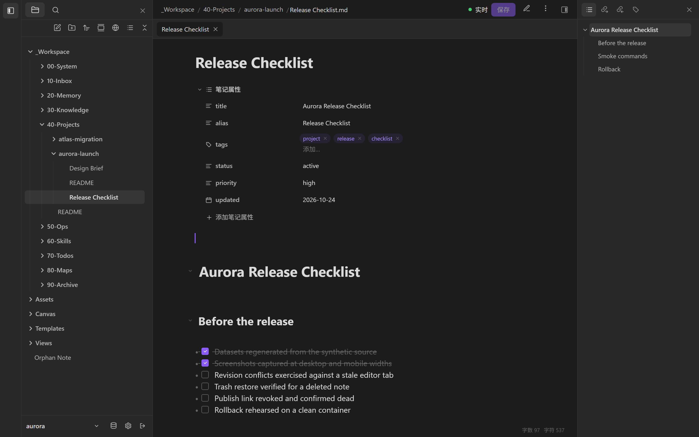

I
Workspace
工作区
Browse, read and edit the vault in the browser. Every document has a deterministic route; the explorer, properties and outline stay in reach.
在浏览器里浏览、阅读和编辑 Vault。每个文档有稳定路由，文件树、属性和大纲始终在手边。
Three view modes — reading, source and live preview — share the same document. Properties come from frontmatter and can be edited in place. Writes carry a revision, so a stale tab is rejected instead of silently overwriting a newer note.
阅读、源码、实时预览三种视图共享同一份文档。属性直接来自 frontmatter，可就地编辑。写入携带 revision，过期标签页会被拒绝，而不是静默覆盖新内容。
- Explorer in tree or flat mode, with per-folder note creation.
- Revision-aware writes that refuse stale editors.
- Attachments and themes served from the vault itself.
- 文件树支持树状/平铺，可按目录新建笔记。
- 写入带 revision，过期编辑器会被拒绝。
- 附件与主题直接从 Vault 提供。
